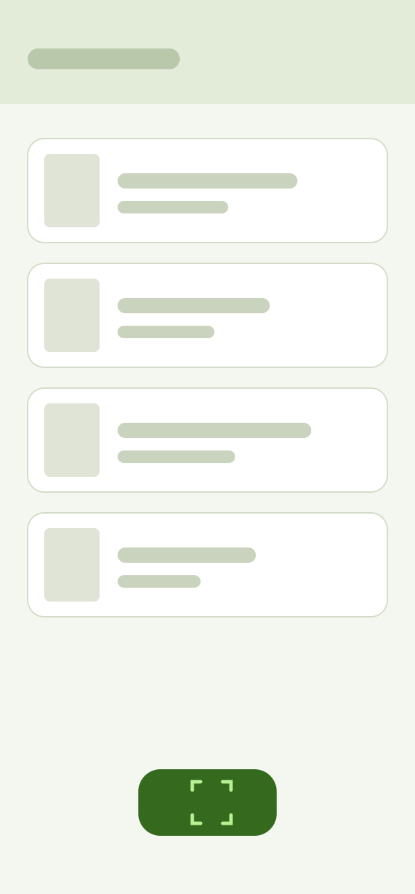

يجد الصفحة بنفسه
يرسم كشف الحواف المباشر حدود الصفحة، ويلتقط التصوير التلقائي الصورة حين تثبت الحدود. وزر التصوير اليدوي موجود دائماً.
 ماسح كيوي (Scan Kiwi™) · ماسح مستندات لأندرويد
ماسح كيوي (Scan Kiwi™) · ماسح مستندات لأندرويد
يحوّل ماسح كيوي الورق إلى ملفات PDF واضحة على هاتف أندرويد. لا يملك إذن الإنترنت، ولا حساب فيه ولا إعلانات، وهو مفتوح المصدر.
مجاني · أندرويد 7.0 وأحدث · بالعربية والإنجليزية · ليس على Google Play

المميزات
كل شيء يجري على هاتفك. تبقى مستنداتك في مساحة التطبيق الخاصة حتى تشاركها أو تحفظها.
يرسم كشف الحواف المباشر حدود الصفحة، ويلتقط التصوير التلقائي الصورة حين تثبت الحدود. وزر التصوير اليدوي موجود دائماً.
اسحب الزوايا والجوانب مع عدسة مكبّرة تحت إصبعك. تُعدَّل الصفحة وتُقص، ويمكنك إعادة القص لاحقاً.
الأصلي، والألوان المحسّنة، والرمادي، والأبيض والأسود، وإزالة الظلال. وصفحات الأبيض والأسود تُحفظ بصيغة 1-بت لملفات صغيرة.
A4 أو Letter أو A5 أو Legal أو بحجم الصورة، بثلاثة مستويات جودة، مع الحجم المتوقع قبل المشاركة. ومن الخيارات PDF/A الأرشيفي والحماية بكلمة مرور AES-256.
التعرّف على النص على الهاتف نفسه (Tesseract) يصنع ملفات PDF قابلة للبحث، ويتيح لك إيجاد المستندات بكلماتها. الإنجليزية جيدة، ودقة العربية أقل من الإنجليزية.
وضع الهوية يضع الوجه والظهر بمقاسهما الحقيقي على صفحة A4 واحدة. ارسم توقيعك مرة واحدة وضعه على أي صفحة.
الخصوصية
التثبيت
ماسح كيوي ليس على Google Play، فتثبّت الملف بنفسك. ويطلب منك أندرويد السماح بالتثبيت من التطبيق الذي نزّلت به الملف.
ScanKiwi-1.2.0.apk على هاتفك بالزر في هذه الصفحة.التحديثات
لا يملك ماسح كيوي إذن الإنترنت ولا يتصل به أبداً، ولا يحدّث نفسه. للتحديث التلقائي يمكنك استعمال Obtainium، وهو تطبيق مجاني مفتوح المصدر من مطوّر مستقل (ليس من FastKiwi)، يتابع إصداراتنا على GitHub ويثبّت الجديد، وقد يطلب أندرويد تأكيدك. حين يتصل Obtainium أو المتصفح بـ GitHub يرى GitHub عنوان IP الخاص بك كأي موقع. ويمكنك التحديث يدوياً من صفحة الإصدارات.
في التطبيق، في الإعدادات ◂ «التحديثات» تجد «حدّثه تلقائياً عبر Obtainium» و«ابحث عن تحديث».

مجاني. ملف APK واحد، مباشرة من الإصدار الرسمي للتطبيق.
بصمة SHA-256 للملف ScanKiwi-1.2.0.apk: {{APK_SHA256}}، وهي أيضاً في SHA256SUMS.txt. لمقارنتها على حاسوب شغّل Get-FileHash .\ScanKiwi-1.2.0.apk (ويندوز) أو sha256sum ScanKiwi-1.2.0.apk (لينكس وماك).
بصمة SHA-256 لشهادة التوقيع: {{SIGNING_CERT_SHA256}}. يرفض أندرويد أي تحديث غير موقّع بهذه الشهادة.
يُبنى ملف APK ويُوقَّع على حاسوب المطوّر، لا على GitHub، لذلك لا يحمل شهادة مصدر من GitHub. ويضم الإصدار قائمة المكوّنات (SBOM) وملف مصدر غير موقّع بمستوى SLSA Build L1 يقول ذلك بالضبط.
لا. لا يملك إذن الإنترنت، فلا يستطيع الاتصال أصلاً. المسح والتعرّف على النص وصنع ملفات PDF كلها تجري على هاتفك.
ماسح كيوي منشور هنا وفي صفحة إصداراته على GitHub فقط. لهذا يطلب أندرويد في المرة الأولى أن تسمح بالتثبيت من هذا المصدر.
تظهر هذه الرسالة لكل تطبيق لا يأتي من متجر تطبيقات. نزّل الملف من هذه الصفحة أو من إصداراتنا على GitHub فقط، ويمكنك مقارنة بصمة SHA-256 بالبصمة المعروضة أعلاه.
لا. ماسح كيوي 1.2.0 هو التطبيق نفسه باسم إنجليزي جديد، بالحزمة نفسها ومفتاح التوقيع نفسه. يُثبَّت فوق الإصدار القديم ويحتفظ بمستنداتك وإعداداتك.
العربية مدعومة، لكن دقتها أقل من الإنجليزية، خصوصاً مع الخطوط الصغيرة أو الإضاءة الضعيفة. أما المسح والقص وملفات PDF فتعمل بالطريقة نفسها في كل اللغات.
في مساحة التطبيق الخاصة على هاتفك. لا تراها التطبيقات الأخرى حتى تشارك ملفاً أو تحفظه. وحذف التطبيق يحذفها، فاحفظ ما تريد الاحتفاظ به أولاً.
نعم. ماسح كيوي مفتوح المصدر بترخيص Apache-2.0، وتعليمات بنائه في مستودعه على GitHub. أما الاسم والأيقونة فعلامتان تجاريتان لا يشملهما الترخيص.